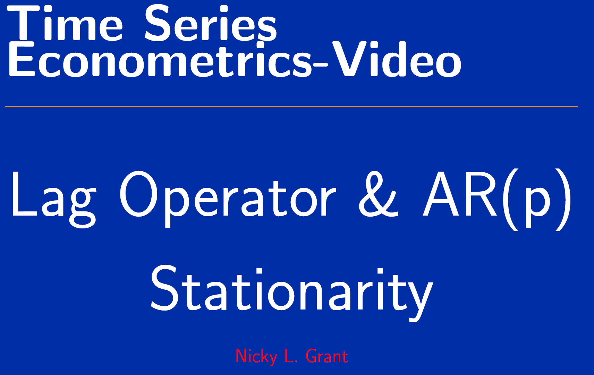
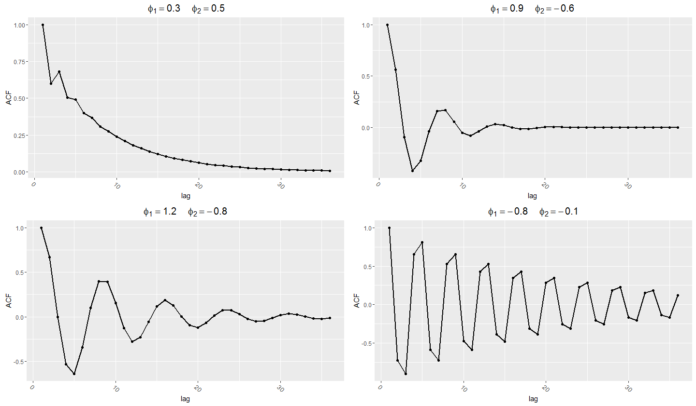
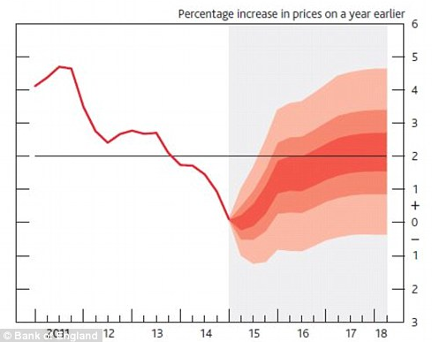
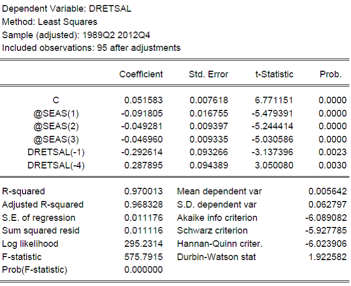
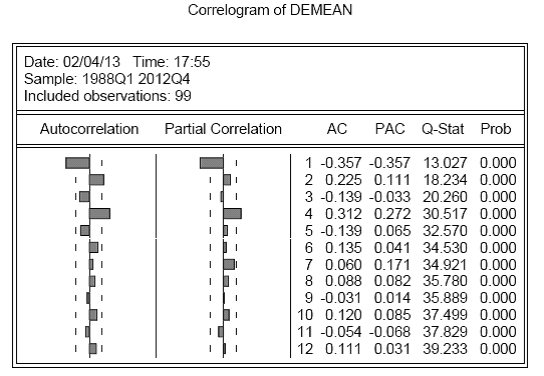

This advanced note keeps the TeX-note structure but separates the technical points: MA(∞) representations, Wold decomposition, lag operators, AR(p) stationarity roots, ARMA estimation, model selection, prediction and seasonality. It is the more mathematical continuation of the earlier intuitive notes.
Working through advanced time-series derivations?
Send the relevant notes, problem set or dissertation method question. The diagnostic can focus on lag operators, MA(∞), Wold decomposition, roots or model selection.
Before this note
Read the earlier notes first if you need the intuition for stationarity, autocorrelation, the correlogram, and AR/MA/ARMA models. This page assumes those ideas and focuses on derivations and applied modelling steps.
1. MA(∞): writing a process as a sum of shocks
The notes introduce the MA(∞) process because it is a powerful way to understand stationary time series. The general form is:
The intuition is that the current value can be written as a long weighted sum of current and past shocks. The weights \(η_s\) tell us how much a shock from \(s\) periods ago still matters today.
For the MA(∞) representation to be well behaved, the weights must die away fast enough. This is usually expressed through absolute summability.
This links directly to stationarity. If old shocks never die away, the process does not settle into stable behaviour. If their effects shrink sufficiently, the process can have a stable mean, variance and autocovariance structure.
2. Wold decomposition: why MA(∞) matters
The notes highlight the Wold decomposition because it gives the MA(∞) representation a deeper meaning. Broadly, a stationary process can be represented as a deterministic part plus an infinite moving average of white-noise shocks.
The point is not that we always estimate an infinite model directly. The point is that ARMA models can be understood as compact ways of describing how shocks propagate through time.
3. ARMA(1,1) as an MA(∞)
The ARMA(1,1) model is:
The lecture notes show that a stationary ARMA(1,1) can be written as an MA(∞). The coefficients follow a difference equation, so after the first lag the effect of older shocks is multiplied repeatedly by \(φ_1\).
So when \(|φ_1|<1\), the weights shrink and the representation is stationary. This gives the same stationarity condition as the AR(1) part: the persistence parameter must not let shocks grow forever.
4. Lag operator: compact notation for time-series models
The lag operator makes the notation cleaner. It is defined by:

The lag operator shifts a time-indexed variable backwards.An AR(p) model can then be written compactly as:
where \(φ(L)=1-φ_1L-…-φ_pL^p\). This notation is useful because stationarity conditions can be stated in terms of the roots of a polynomial.
5. AR(p) stationarity and characteristic roots
For AR(1), the condition was easy: \(|φ_1|<1\). For AR(p), the idea is the same but the algebra is expressed through roots. The model is stationary if the roots of the relevant characteristic equation lie in the correct region.
The lecture-note intuition is that the AR(p) also has an MA(∞) representation, but now the MA(∞) coefficients satisfy a p-th order difference equation. Stationarity requires those coefficients to die away.
Stationarity is still the same idea: the effect of shocks must fade rather than explode. The root condition is the general AR(p) way of checking this.

AR(2) processes can produce richer decay and oscillation patterns than AR(1).6. Estimating ARMA models
The inference notes then move from theoretical processes to sample data. The central question is: given \(y_1,…,y_T\), how do we estimate the unknown model parameters?
AR(p) estimation
An AR(p) model can be viewed like a regression of \(Y_t\) on its own lags:
Because the lagged values are observed, ordinary least squares can be used under the assumptions set out in the course. The notes then rely on familiar OLS properties: consistency, asymptotic normality and valid hypothesis testing under suitable conditions.
MA estimation
MA models are more difficult because the lagged shocks are not observed. In an MA(1), the model contains \(ε_{t-1}\), but that is not a data column we can simply put into a regression. This is why MA and ARMA models are commonly estimated by maximum likelihood or related numerical methods.
AR estimation is easier because lagged values of \(Y\) are observed. MA estimation is harder because lagged shocks are hidden and must be inferred as part of the estimation procedure.
7. Model specification, AIC and SIC
The notes explain that the correlogram is useful but not enough. It can suggest an AR or MA structure, but the estimated model still needs formal selection and checking.
Information criteria compare models by balancing fit against complexity. A model with more parameters usually fits the sample better, but it may only be fitting noise.
| Criterion | What it does | Typical feature |
|---|---|---|
| AIC | Rewards fit and penalises extra parameters. | Often chooses a larger model. |
| SIC/BIC | Uses a heavier penalty for extra parameters as sample size grows. | Often chooses a more parsimonious model. |
The notes point out that AIC and SIC do not always choose the same order. The practical response is to combine theory, the correlogram, information criteria, coefficient tests and residual diagnostics.
8. Prediction from an AR(1)
The prediction section uses the AR(1) model to distinguish unconditional and conditional ideas:
The unconditional mean is the overall long-run mean:
But if we know today’s value \(y_T\), and \(φ_1 eq0\), then today’s value contains information about tomorrow. The one-step conditional forecast is:
This is the core forecasting intuition: because the process is autocorrelated, conditioning on the observed past improves the forecast. Further ahead, the forecast gradually moves back towards the unconditional mean if the AR(1) is stationary.

Forecast uncertainty widens as the prediction horizon increases.9. Seasonality: regular time-patterns
The final part of the fuller notes introduces prediction and seasonality. Seasonality appears when a series has repeated patterns at regular intervals, such as quarterly or monthly effects.

Seasonality creates regular repeating patterns through the year.The notes distinguish two broad approaches:
| Type | Meaning | How it is modelled |
|---|---|---|
| Deterministic seasonality | Seasonal means differ in a stable way. | Use seasonal dummy variables. |
| Stochastic seasonality | Seasonal dependence is part of the dynamic process. | Use seasonal AR terms or related time-series models. |
A seasonal correlogram often shows spikes at seasonal lags, such as 4, 8 and 12 for quarterly data. The notes then use residual correlograms to decide whether deterministic dummies have removed the seasonality or whether stochastic seasonal dependence remains.

After removing deterministic seasonal means, the remaining pattern can be checked using a residual correlogram.How to use this advanced note
- Use AR, MA and ARMA processes for intuition.
- Use this page for the algebra and modelling steps.
- Use the correlogram note whenever you need to interpret ACF output or residual diagnostics.
Advanced time series tuition
For help with ARMA derivations, Wold representations, lag-operator algebra, maximum likelihood, prediction or seasonality, see econometrics tuition, financial econometrics tuition or PhD econometrics support.